% UD4 - Hojas de estilos
% Diseño de interfaces Web
% Septiembre 2023
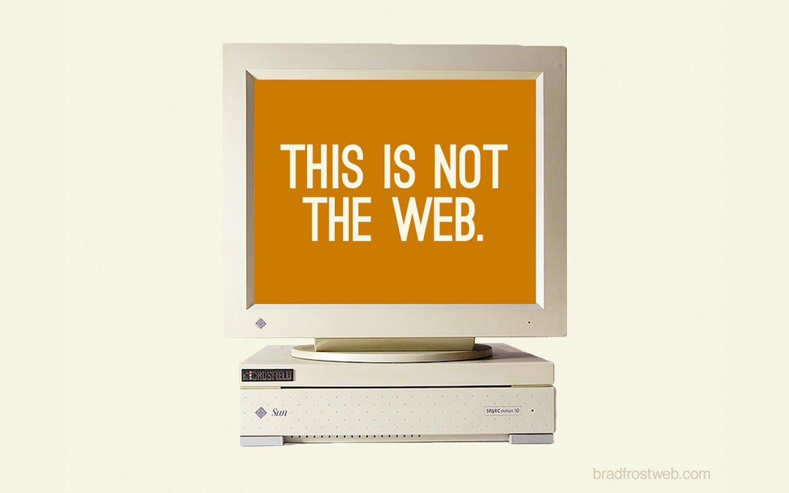
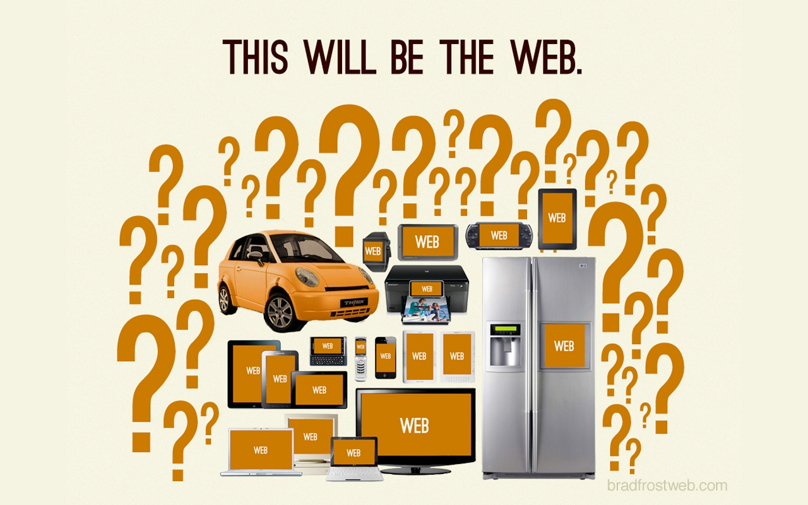
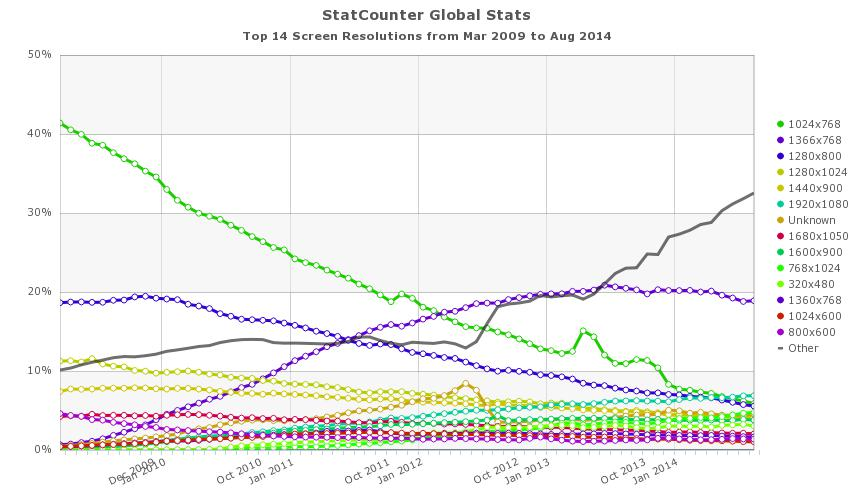
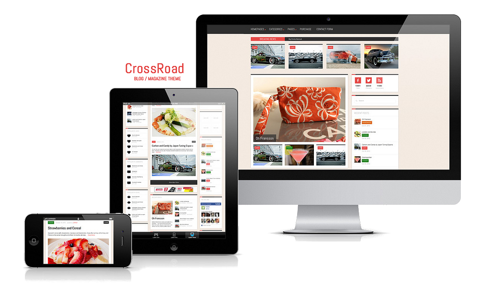

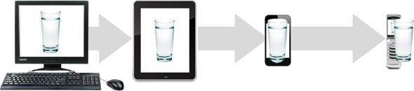

Reducción de costos. Pues no hay que hacer varias versiones de una misma página.
Eficiencia en la actualización. El sitio solo se debe actualizar una vez y se ve reflejada en todas las plataformas.
Mejora la usabilidad. El usuario va a tener experiencias de usuario parecidas independientemente del dispositivo que esté usando en cada momento
Mejora el SEO. Según las Guidelines de Google el tener una web que se vea correctamente en móviles es un factor que tienen en cuenta a la hora de elaborar los rankings.
Impacto en el visitante. Esta tecnología por ser nueva genera impacto en las personas que la vean en acción, lo que permitirá asociar a la marca con creatividad e innovación.


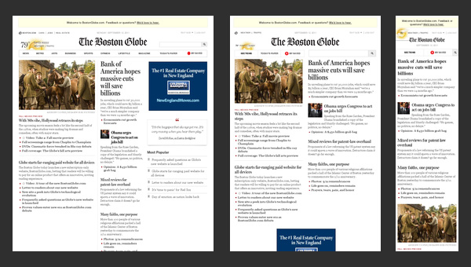
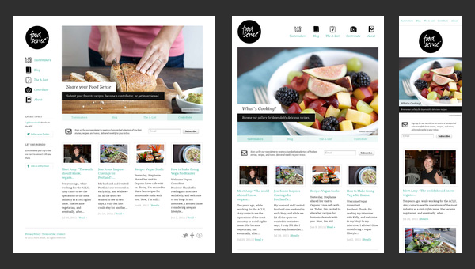
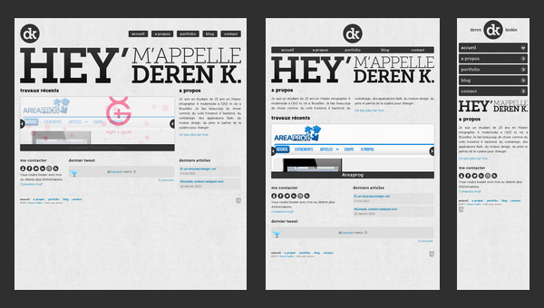
Formula: target ÷ context = result
Es recomendable indicar el cálculo realizado junto a la regla de CSS.
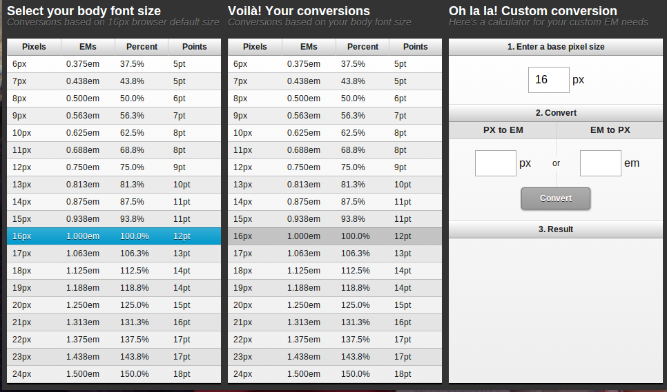
body {
font: 13px;
}
h1 {
font-size: 1.3846 em;
/* 18px/13px = 1.3846em */
}
Importante: las medidas em se heredan, es decir, un elemento dentro de un elemento tomará como referencia el superior para calcular cuánto es un em.
Por ejemplo, si tenemos una caja donde hemos definido una fuente como 0.5em y dentro de esa caja otra con una fuente 0.25em, esta última fuente tendrá 1/4 de tamaño respecto a la 1/2 de tamaño de la fuente general.
Sabes que em y rem son dos unidades de CSS relativas. En concreto son relativas al font-size existente. Sin embargo, mientras que em tiene referencia el tamaño de la fuente del elemento donde se usa esa unidad, rem tiene referencia al tamaño de la fuente definido en el elemento root.
<body>
<header>
<h1>Titulo de la página</h1>
<h2>Subtitulo de la página</h2>
</header>
<main>
<h2>Apartado 1</h2>
<section>
<h2>Apartado de una sección dentro del main</h2>
</section>
</main>
</body>
:root {
font-size: 14px;
}
h1 {
font-size: 2rem;
text-align: center;
text-transform: uppercase;
}
h2 {
font-size: 1.642857143rem;
/* 23px/13px = 1.642857143em */
text-align: center;
text-transform: capitalize;
}
main {
background-color: gray;
color: white;
width: 100vw;
min-height: 90vh;
font-size: 20px;
}
section {
font-size: 20px;
}
section h2 {
font-size: 1.642857143em;
}
Como podemos ver en la siguiente imagen el tamaño de la letra del h2 de dentro del section es de mayor tamaño que el resto al tener como valor para el font-size del section 20px y emplear em para definir lo h2 de las section.
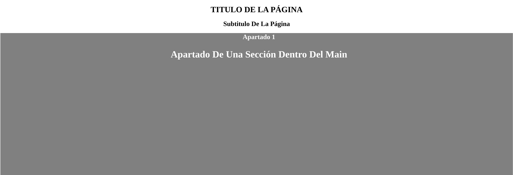
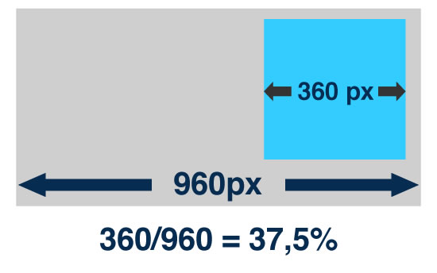
<div class="row">
<div class="col-xs-12 col-sm-6 col-md-4 col-lg-3">1</div>
<div class="col-xs-12 col-sm-6 col-md-4 col-lg-3">2</div>
<div class="col-xs-12 col-sm-6 col-md-4 col-lg-3">3</div>
<div class="col-xs-12 col-sm-6 col-md-4 col-lg-3">4</div>
</div>
<header>...</header>
<article>...</article>
<aside>...</aside>
@column-width: 60;
@gutter-width: 20;
@columns: 12;
header { .column(12); }
article { .column(9); }
aside { .column(3); }
@media (max-device-width: 960px) {
article { .column(12); }
aside { .column(12); }
}
img {
max-width: 400px;
}
img {
width:100%;
}
img {
max-width: 100%;
}
img {
width:100%;
max-width:400px;
}
.background-fluid {
width: 100%;
background-image:
url(img/water.jpg);
background-size: cover;
}
La etiqueta meta para el viewport fue introducida por Apple en Safari para móviles en el año 2007, para ayudar a los desarrolladores a mejorar la presentación de sus aplicaciones web en un iPhone.
Hoy en día ha sido ampliamente adoptada por el resto de navegadores móviles, convirtiéndose en un estándar de facto.
Al fijar el ancho (width) o alto (height) del viewport, podemos usar un número fijo de pixeles (ej: 320px, 480px, etc) o usar dos constantes, device-width y device-height respectivamente.
Se considera una buena práctica configurar el viewport con device-width y device-height, en lugar de utilizar un ancho o alto fijo.
La propiedad initial-scale controla el nivel de zoom inicial al cargarse la página.
Las propiedades maximum-scale, minimum-scale controlan el nivel máximo y mínimo de zoom que se le va a permitir usar al usuario.
La propiedad user-scalable [yes|no] controlan si el usuario puede o no hacer zoom sobre la página.
Ejemplo
<meta name="viewport"
content="width=device-width,
initial-scale=1,
user-scalable=yes">
Un Media Query no sólo nos permite seleccionar el tipo de medio (all, braille, print, proyection, screen, tty, tv, etc.), sino además consultar otras características sobre el dispositivo que esta mostrando la página.
Ejemplo
<link rel="stylesheet"
type="text/css"
media="all and (min-width: 480px)"
href="tablet.css" />
<!-- tablet.css es un CSS con reglas para cuando el área de visualización sea mayor que 480px -->
@media all and (min-width: 480px) {
/* aquí poner las reglas CSS
para cuando el área de visualización
sea mayor que 480px*/
}
@import url("tablet.css")
all and (min-width: 480px);
/* tablet.css es un CSS con reglas
para cuando el área de visualización
sea mayor que 480px */
}
@media tv
and (min-width: 700px)
and (orientation: landscape) {
/* reglas que queremos que
se apliquen para televisiones
con áreas de visualización
mayores de 700px siempre que
la pantalla esté en
modo landscape */
}
Se pueden combinar múltiples Media Queries separados por comas en una lista, de tal forma que si alguna de las Media Queries devuelve true, todo la sentencia devolverá true.
Esto es equivalente a un operador or.
Cada Media Query separado por comas en la lista se trata individualmente.
@media tv,
(min-width: 700px),
(orientation: landscape) {
/* reglas que queremos que
se apliquen para televisiones,
o para dispositivos con áreas
de visualización mayores
de 700px, o cuando la pantalla
está en modo landscape */
}
Se utiliza para negar un Media Query completo.
No se puede negar una característica individualmente, si no solamente el Media Query completo.
@media not tv and max-width(800px),
not screen and max-width(400px) {
/* reglas que queremos que
se apliquen para dispositivos
que no sean ni televisiones
con áreas de visualización
menores de 800px, ni pantallas
con áreas de visualización
menores de 400px */
}
@media not (tv and max-width(800px)),
not (screen and max-width(400px)) {
...
}
A casi todas las características se les puede adjuntar los prefijos min- y max-
De hecho lo habitual es usar dichos prefijos.

@media all and (max-width: 320px) {
/* Estilos para anchos
menores a 320px */
}
@media all and (max-width: 768px) {
/* Estilos para anchos
menores a 768px */
}
Los Media Query no están soportados por todos los móviles.
La versión móvil termina siendo una versión descafeinada de la web original.
@media all and (min-width: 320px) {
/* Estilos para anchos
superiores a 320px */
}
@media all and (min-width: 768px) {
/* Estilos para anchos
superiores a 768px */
}
Funciona en móviles y/o navegadores antiguos que no soportan los Media Queries.
Normalmente la hoja de estilos resultante suele ser más sencilla que usando la otra vía.
Empezar por el móvil nos servirá para determinar de una manera más clara cual es el contenido realmente importante de nuestra web.
Lo mejor sería que los puntos de rotura que aplicamos en los Media Query, fueran en función de nuestro contenido, en vez de en función del tamaño del dispositivo más vendido.
La manera de hacerlo: ir cambiando poco a poco el ancho del navegador y donde la web se rompa, aplicar un Media Query.
Transparencias:
Ejercicios:
Responsive Web Design
Introducción al Diseño Web Adaptable o Responsive Web Design
Tutorial: Responsive Web Design
Tutorial: Transforma tu web en Responsive Design
Curso responsive web design - Redradix School
Todo lo que necesita saber sobre Responsive Web Design
Diseño web fluido y plantilla fluida con HTML5 y CSS3
Beneficios del Responsive Web Design en SEO
Responsive Web Design Testing Tool
Responsive Web Design
Responsive Design y accesibilidad. Buenas y malas prácticas. Errores comunes.
Diseño web adaptativo: mejores prácticas
Traducción de "Responsive Web Design" de "A List Apart"
Responsive Design Exercise
Estadísticas de StatCounter
Página de testeo de Matt Kersley
Los 5 patrones del Responsive Design con FlexBox
El futuro del CSS Grid Layout
El gran poder de CSS3: FlexBox